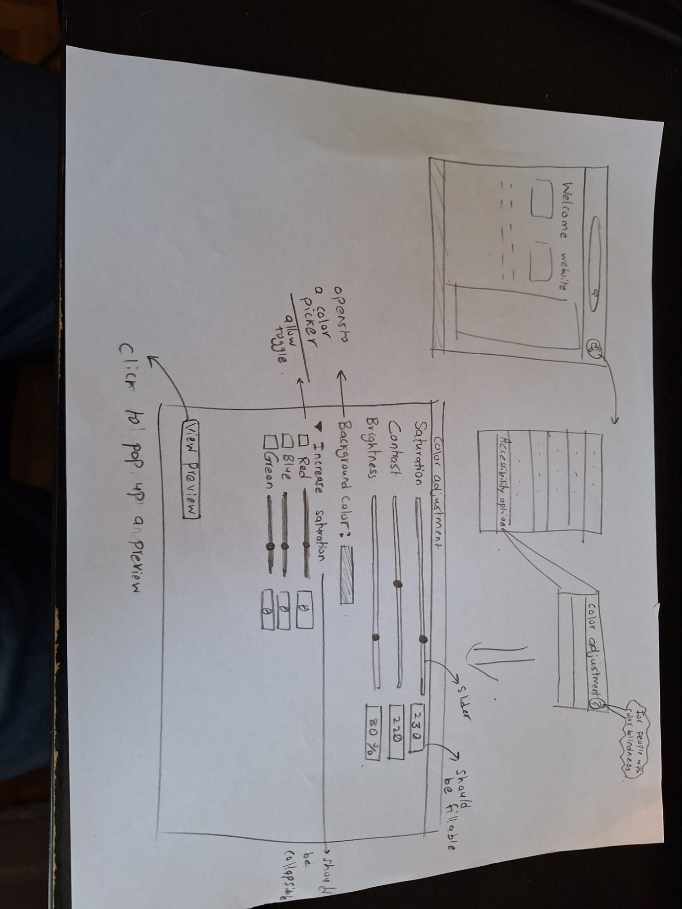

Project Proposal
We found a certain lack of addressing accessibility concerns from a subset of university websites. We focused on how to address the needs of color blind people in that aspect. We found one of the ways that colorblind people were impeded were the color schemes used in websites. We want to fix it using an option to allow the users to modify the color scheme in the website using a preview.
User manual
Introduction
Our product’s main feature is the ability to use saturation, presets and contrast of colors on the websites to allow colorblind people to better distinguish between the colors.
Model
Here is a brief look into the high level design of the product

How to access color blindness features
To access the main features, you have to navigate through the settings menu. Access the settings through the cog icon at the top of the website. Go into accessibility settings > color adjustment and you will get the main feature.
Features
Saturation, contrast, brightness
All of the above features have sliders that will have numerical values attached. There is also the option to enter a number manually. Having more saturation and contrast can help some form of colorblindness have better distinction between colors.
Brightness will not apply to the screen but rather to the image elements of the website.
Background color.
Clicking on the background color will open up a color wheel where the user can make a choice.
RGB saturation
While saturation controls the overall saturation, this setting allows the user to modify the specific saturation of any of the RGB values. Similarly to before, there are sliders that will have numerical values attached. There is also the option to enter a number manually.
View Preview
Clicking on this will have a window pop up with common design elements of the website with some shapes with labeled colors, so that the user can understand the impact of having these applied changes.
Design evolution
Important design choices
- Having more depth. One feedback we received was about the superficialness of the prototypes and sketches we had in the last phase. In this phase, we attempted to have more details in our design and prototype
- Narrowing down the focus. We initially had a very broad user target and we narrowed it down to just users with colorblindness. We removed the features that didn’t pertain to them and tried to add new features that might help them
- Sliding scales. Upon doing further research on our target users, we found that colorblindness works on a spectrum rather than discrete categories. For example, in deuteranomaly, some people can perceive some shades better than others. So instead of just using presets, we want to offer the option to have scales to adjust saturation, contrast and brightness.
Focus on the alternative text
From the feedback we gained, we found that alternative text should only not be added for the elements that we think they are important or not clear enough. We should be aware that every single element, such as an icon should provide additional information so that it provide more accessibility.
Keeping minimal color usage
In the previous design, we do concern about the colour usage such as red and green buttons. However, we found that it is not enough. The colour usage of the whole interface should be kept minimal, so that it would be easier for the target user to perceive. Therefore, the next step would be reevaluating the color usage in the website, including the navigation bars, hover messages, buttons, etc.
Adding patterns and textures to visual elements
While keeping minimal colour usage may not provide enough clarity to the users, patterns and textures could be used instead to help users identify different components in the websites. Therefore, we are going to make use of them.
Prototype implementation feel
Figma link
User population
Project Proposal
We found a certain lack of addressing accessibility concerns from a subset of university websites. We focused on how to address the needs of color blind people in that aspect. We found one of the ways that colorblind people were impeded were the color schemes used in websites. We want to fix it using an option to allow the users to modify the color scheme in the website using a preview.
User population
Age: 17 - 30
Gender: No preference
Occupation: Full-time/Part-TIme student or ex-student (person who has had to work with education websites. This includes people who graduated and dropouts as well.)
Added conditions: color blindness (any condition on the spectrum)
Location: any (For the testing of the prototype, we have the option of doing it remotely.)
Usability goals
1. Users should be able to easily navigate to the accessibility setting in the website.
Rationale: We want users to be able to easily access the desired features so they can make changes. We want to remove any confusion on how to reach the accessibility features.
Metrics of success:
- The user should take less than 3 minutes to reach the goal.
- The user should make less than 5 deviations from the correct path to get to the goal.
- The user rates the difficulty of getting to the goal a maximum of 3/7 with 1 being very easy to use and 7 being difficult to use.
2. Users should be able to preview the visual changes to the website.
Rationale: Users might not be sure of how a change will affect the visuals of the website. They might need to try different types of settings before they are sure of the settings.
Metrics of success:
- The user is able to change to a new preview within 60 seconds.
- The user rates the usefulness of the preview a minimum of 5/7 with 1 useless and 7 being incredibly useful.
3. Users should have an easier time distinguishing the colors on the website after applying their desired settings.
Rationale: The end goal of our product is to make it easier for color blind to interact with the system. One of the ways to do that is to make it easier to distinguish colors.
Metrics of success:
- The user rates the usefulness of the changes a minimum of 5/7 with 1 useless and 7 being incredibly useful.
- The user rates the effectiveness of the changes a minimum of 5/7 with 1 being almost no change in the visuals and 7 being very clear and distinct visual difference with each change in the settings.
Usability test procedures
Answering specific questions
- How many examiners are required?
A minimum of 1 examiner is required. The ideal would be to have 2 examiners with one examiner being focused with troubleshooting any small problems with the system and observation and the other being focused with the interactions with the user and getting to know them and the user feedback on the system. Both examiners will be sharing the same tasks of observing, talking to the users and taking notes. However, their secondary focus will be different as described earlier. - What equipment will the examiners need?
The examiners will need a recording device with 2 possible positions: one showing the user fully interacting with the system and the other showing only the hands of the user interacting with the hardware. We will accommodate the preference of the user. The interface will be screen recorded. Furthermore, the examiners will be provided with a template paper and writing pad to note down their observations. They will also be provided with scrap paper in case sketches or extra writing is required. - How should your prototype be handled? (manual/documentation)
The prototype is a simplified version of a university website. The user should have some related experience with university websites. We expect the user to interact with the website using the keyboard and mouse. - How will you instruct your examiners to proceed?
The examiners should start with making the users fill in the pre-test questionnaire. The user is given an introduction to the study and made comfortable. Extra information is given by the training documentation. The examiners are then instructed to introduce the system and the task to the user. The tasks are done one by one. The user is asked some of his feedback verbally and is given questions from the post-test questionnaire. - How should the examiners treat the test subjects, what should they tell them?
The examiner should be accommodating to the users and often prompt the discussion about what colors they see on screen as this detail can easily be lost. When navigating the menus, examiners should let the users work on their own until asked for help. It is expected that the users be nudged in the right direction first before being explicitly given the right answer.
Examiners should also engage with the user and ask them their thoughts if the user is being idle - What should the examiners avoid doing?
The examiner should avoid rushing the user and giving them excessively specific instructions. The examiners should avoid giving the user the exact solution unless prompted several times. The examiner should avoid assuming that the user have the same visual on the screen as them (This is central to the study).
When talking about the color blindness, examiners should avoid referring to it as a handicap or disability. Examiners should engage this topic with curiosity and empathy in mind. - What should the examiners avoid telling the test subjects?
Examiners should avoid telling the test subjects the exact visuals on the screen. They should also avoid giving them exact solutions or solutions that the examiner perceives as correct. The examiner should not tell the subjects that they succeeded or failed in a task as their feedback is already a success for the test. - What/How/When should the examiners measure?
Reporting
Recording
We will use a video recording device with 2 possible positions: one showing the user fully interacting with the system and the other showing only the hands of the user interacting with the hardware. We will accommodate the preference of the user. The interface will be screen recorded. We will also have a separate voice recording.
The examiners will also record the interactions and their observations on paper. The examiners will be given a template table to fill in their observations and thoughts as the tasks are being completed.
The recordings should be done with the user’s consent. Some recordings like the video and audio recording might need to be omitted if the user is uncomfortable with it.
Reporting
The examiners may jot down extra information after the test has been conducted. All paper with the relevant observations should be scanned and sent as pdfs to the design team.
3 recordings are expected to be sent to the design team:
- The audio recording as an mp3 file
- The video recording as an mp4 file
- The screen recording as an mp4 file
Measured metrics
- Time taken to reach the required settings
- Expectation: We expect the time taken to be less than 3 minutes
- Potential Implications: If the time exceeds 3 minutes, it means the steps to get to the settings are too complicated and should either be simplified or cleared up with new indicators and help/documentation.
- Number of deviations taken before reaching the required settings
- Expectation: We expect the number of deviations to be less than 5.
- Potential Implications: If there are more than 5 deviations, it implies that the design is confusing. There might be some deviation as a new user is getting used to the system.
- Rating of the difficulty to get to the required settings
- Expectation: We expect the rating to be a maximum of 3/7 with 1 being very easy to use and 7 being difficult to use.
- Potential Implications: The higher the rating, the more confusing the system. We would have to change the design if the rating is too high.
- Time taken to change to a new preview(starting from when the user decides to change the setting)
- Expectation: We expect the user to be able to change to a new preview 60 seconds after he decides to make the change.
- Potential Implications: If the change in preview takes too long, it means the design is not responsive enough and this might discourage users from exploring new setting options.
- Rating of the usefulness of the preview
- Expectation: We expect the rating to be a minimum of 5/7 with 1 useless and 7 being incredibly useful.
- Potential Implications: The higher the rating, the better it is for the system. If this feature is not useful, it might need a redesign or be scrapped.
- Rating of the usefulness of the changes
- Expectation: We expect the rating to be a minimum of 5/7 with 1 useless and 7 being incredibly useful.
- Potential Implications: We want the rating to be higher. This metric is important as it lets us know how effective our product is at solving our target problem
- Rating of the effectiveness of the changes
- Expectation: We expect the rating to be a minimum of 5/7 with 1 being almost no change in the visuals and 7 being very clear and distinct visual difference with each change in the settings.
- Potential Implications: The higher the rating, the more effective the product. Being better able to distinguish colours is not always translated into usefulness but it is a step into the right direction and shows that our product has some impact.
Usability evaluation
Besides having the user testing, a detailed usability evaluation plan is created based on Nielsen’s “How to Conduct a heuristic Evaluation” and “10 Usability Heuristics for User Interface Design”. The purpose of the usability evaluation is to assess the interface with a set of heuristics so that it better aligns with our usability goals.
Methodology
In total, there would be 5 people (3 from our team, and 2 are the peer assessors) assessing the website. Each evaluator would have to first independently evaluate the interface on a task-based approach based on the evaluation criteria, and jot down their observations (design issues and recommendations) on the workbook. After the independent evaluation, evaluators should get together, synthesise their ideas with affinity diagramming, and discuss to see what problems to be addressed in short and long term.
Evaluation Criteria
With the reference of Nielsen’s 10 Usability Heuristics for User Interface Design, the following criteria are assessed in the usability evaluation in order to meet the usability goals of this project.
Nielson’s 10 heuristics
#1: Visibility of system status
#2: Match between system and the real world
#3: User control and freedom
#4: Consistency and standards
#5: Error prevention
#6: Recognition rather than recall
#7: Flexibility and efficiency of use
#8: Aesthetic and minimalist design
#9: Help users recognize, diagnose, and recover from errors
#10: Help and documentation